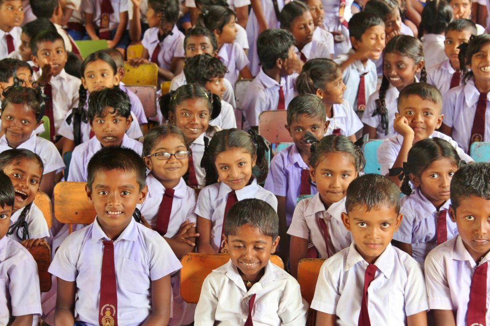
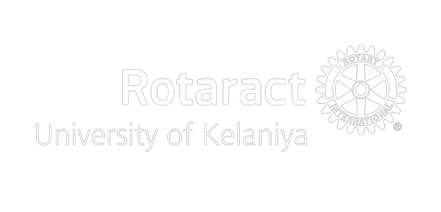

Ignite ஸ்ரீ ලංකා
Ignite Sri Lanka is a project initiated with the purpose of "developing a chosen village through six key sectors with sustainability". The initiative focuses on long-term impact by addressing critical areas collaborating with local stakeholders, organizations, and volunteers, the project aims to create self-sufficient communities, improve living standards, and provide future-oriented opportunities for villagers, ensuring continuous growth even beyond the project’s duration.